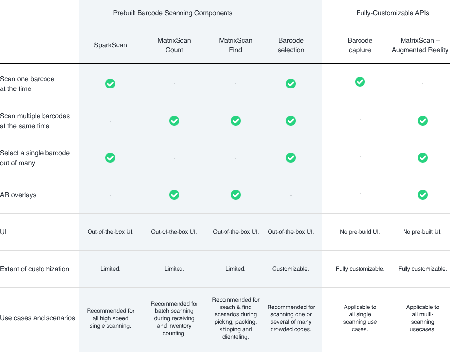

Scandit Data Capture Basics
The Scandit Data Capture SDK is a powerful software development kit designed to enable mobile devices to capture and process a wide range of barcodes and other types of data. With this SDK, developers can easily build high- performance data capture applications that leverage the latest advancements in computer vision and machine learning. In these documentation pages, we provide an overview of the key features and capabilities of the Scandit Data Capture SDK, as well as guidance on how to get started with integrating it into your own mobile application.
Pre-Built Barcode Scanning Components
Scandit offers building blocks that can be integrated in just a few lines of code. The pre-built camera UI has been designed and user-tested to achieve superior process efficiency, ergonomics and usability.
Together with the relevant samples, you can have a fully-built workflow in hours not weeks.
Pre-built Components vs. Fully customizable API Features Comparison
MatrixScan Find
AR-Assisted Search & Find
Search during picking and packing
Search during order fulfillment
Barcode Selection
Select one barcode among many
Use this component when barcodes are crowded
Fully-Customizable API For Barcode Scanning
Barcode tracking
Scan multiple codes and display AR info with MatrixScan
Feature Comparison For Barcode Scanning
ID Scanning And Verification
Scandit can capture and extract data from over 2,000 identity documents worldwide. The ID Capture API can be used to read Machine Readable Zones (MRZ) on passports, visa stickers and ID cards, and PDF417 barcodes on the back of driver’s licenses and ID cards, as well as visual inspection zones on the front of various ID documents.
To experience our scanning and verification capabilities firsthand, check out the ID Scanning mode on the Scandit Barcode Scanner Demo App (iOS, Android)
ID Capture
ID scanning and verification
Age verified delivery
Boarding
Driver onboarding
Other Capabilities
Text Capture
Text recognition (OCR)
VIN (Vehicle Identification Number)
GS1 Application Identifier
IBAN (International Bank Account Number)
Parser
Barcode data parsing
GS1 Application Identifier
VIN (Vehicle Identification Number)
HIBC (Health Industry Bar Code)